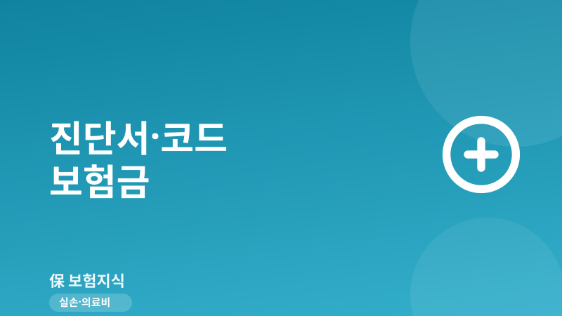
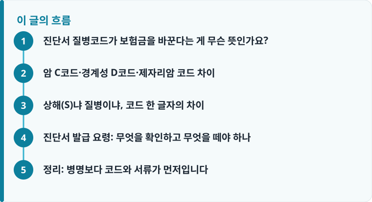

진단서의 질병분류기호(KCD)는 보험사 심사의 첫 관문입니다. 같은 병명이라도 C·D·S 코드에 따라 진단비가 100%에서 10%까지 갈립니다.
암은 조직검사(병리결과지)의 행동양식 코드로 최종 결정되므로, 진단서만이 아니라 병리결과지를 함께 확인해야 합니다.
코드가 실제와 다르면 정정을 요청할 수 있지만, 유리한 코드로 바꿔 달라는 허위 요청은 보험사기입니다.
진단서 질병코드가 보험금을 바꾼다는 게 무슨 뜻인가요?
진단서 아래쪽 ‘질병분류기호’ 칸에 적힌 C50, D05, S52 같은 코드가 KCD(한국표준질병사인분류)입니다. 보험사 심사자는 병명 문장보다 이 코드를 먼저 봅니다. 코드가 약관의 어느 담보에 해당하는지로 지급 여부와 금액을 판단하기 때문입니다. 같은 ‘종양’이라도 코드 앞글자가 C면 암 진단비, D면 경계성·제자리암 담보, S면 상해 담보로 갈라집니다.
그래서 진단서를 받으면 병명만 읽지 말고 코드부터 확인해야 합니다. 흔한 실수가 병명 문장은 ‘암 의증’인데 코드는 확정 전 임시 코드로 발급되는 경우인데, 이 상태로 청구하면 확정 진단이 아니라며 보류되기 쉽습니다. 실손과 진단비의 청구 흐름이 헷갈린다면 실손보험 청구 절차와 서류 준비를 먼저 훑어 두면 코드가 어디에서 작동하는지 이해가 빨라집니다.
암 C코드·경계성 D코드·제자리암 코드 차이
암 진단비를 가르는 것은 코드의 뒷부분, 정확히는 조직검사에서 확인되는 ‘행동양식(behavior)’ 코드입니다. C00~C97은 악성 신생물, 즉 일반암으로 대개 진단비 100%가 지급됩니다. 반면 D00~D09는 제자리암(상피내암), D37~D48은 경계성종양으로 분류되어 유사암·소액암 담보에서 일반암의 10~20%만 지급되는 경우가 많습니다. 예를 들어 갑상선암은 코드가 C73이라 앞글자는 암이지만, 약관에서 별도로 유사암으로 정해 두어 진단비가 크게 줄어드는 대표적 사례입니다.
더 중요한 건 같은 부위라도 조직 결과에 따라 코드가 바뀐다는 점입니다. 대장 용종이 관상선종이면 D12(양성)이라 진단비가 없지만, 상피내암이면 D01, 침윤성이면 C18로 바뀌어 결과가 완전히 달라집니다. 이 최종 판정은 진단서가 아니라 조직검사 병리결과지에 적히므로, 애매한 경계 사례일수록 병리결과지를 반드시 함께 확인해야 합니다.

상해(S)냐 질병이냐, 코드 한 글자의 차이
S00~T14로 시작하는 코드는 외상, 즉 손상 코드로 상해 담보로 청구됩니다. 손목 골절 S62, 무릎 인대손상 S83처럼 사고성 부상이 여기에 속합니다. 반면 같은 골절이라도 골다공증이 원인인 병적 골절이면 M80 계열 질병 코드가 붙어 상해 담보로는 거절될 수 있습니다. 상해와 질병은 자기부담금과 한도, 감액 조건이 다르기 때문에 코드 한 글자가 실제 수령액을 바꿉니다. 예컨대 골절 진단비 특약은 상해로 인한 S 코드에만 지급되는 경우가 많아, 질병 코드로 적히면 같은 뼈가 부러졌어도 진단비가 0원이 되기도 합니다.
낙상으로 다쳤는데 기저질환 코드로만 적히거나, 반대로 퇴행성 질환인데 상해로 잘못 적히는 경우 심사에서 어긋납니다. 이런 불일치가 실제 거절로 이어지는 유형은 보험금이 거절되는 대표 사례와 실손 청구가 반려된 실제 케이스에서 확인할 수 있습니다.
작성·검수 기준
이 글은 특정 보험사 상품이나 특정 코드 사용을 권유하기 위한 것이 아니라, 진단서의 질병분류기호가 심사에서 어떻게 작동하는지 이해를 돕기 위해 작성했습니다. KCD 코드 체계와 담보별 지급 비율은 개정·상품·약관에 따라 달라질 수 있습니다.
실제 지급 여부는 본인 증권의 약관과 심사 결과에 따르므로, 청구 전 실손보험의 보장 구조와 약관을 함께 확인하는 것이 가장 정확합니다.
진단서 발급 요령: 무엇을 확인하고 무엇을 떼야 하나
진단서는 의사의 판단 요약, 병리결과지는 조직검사의 객관적 근거, 진료기록은 경과 전체를 담습니다. 진단비 심사에서 다투기 쉬운 것은 진단서 코드이므로, 코드의 근거가 되는 병리결과지를 함께 떼는 것이 핵심입니다. 서류별 용도가 헷갈린다면 청구에 필요한 서류 종류를 참고하세요.
- 발급 전 창구에서 질병분류기호(KCD)가 적혔는지, 주진단·부진단 코드가 무엇인지 확인합니다.
- 암·종양이면 조직검사 병리결과지를 별도로 발급받아 행동양식(C/D) 코드가 진단서와 일치하는지 대조합니다.
- 사고성 부상이면 초진 기록에 사고 경위와 상해 코드(S/T)가 남았는지 진료기록으로 확인합니다.
- 코드가 실제 진단과 명백히 다르면 의무기록 사본을 근거로 주치의에게 정정을 요청합니다. 단, 사실과 다른 유리한 코드로 바꿔 달라는 요청은 보험사기이므로 절대 하지 않습니다.
- 같은 병으로 여러 담보를 청구할 땐 진단서 원본 여러 부 또는 사본 인정 여부를 미리 물어 재발급 비용을 줄입니다.
정리: 병명보다 코드와 서류가 먼저입니다
진단서는 병명이 아니라 질병분류기호로 심사됩니다. C·D·S 앞글자와 뒤 숫자가 일반암·유사암·상해·질병을 가르고, 그 최종 근거는 병리결과지에 있습니다. 발급 전에 코드를 확인하고, 애매하면 조직검사 결과와 진료기록을 함께 챙기는 것만으로 ‘생각보다 적게 나왔다’는 상황을 상당 부분 줄일 수 있습니다.
다른 보험 정보 글이 궁금하다면 보험지식 블로그에서 이어 읽어 보세요. 가입 전에는 반드시 약관과 상품설명서를 확인하는 것이 가장 안전한 방법입니다.